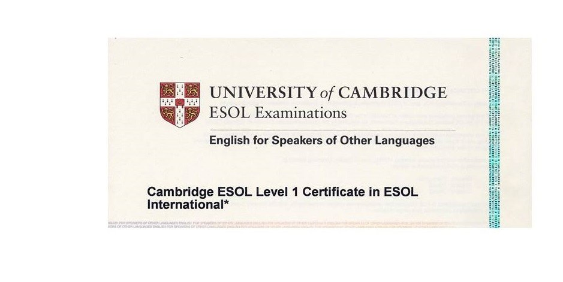

Capron Dylan
Informations Personnelles
- Prénom : Dylan
- Nom : Capron
- Âge : 22 ans
- Adresse : Jules Fellegara, 4 Rue du Maréchal de Logis J Fellegara
- Ville : Cannes
- Code Postal : 06400
- Numéro de téléphone : 06 46 16 50 39
Objectif Professionnel
Mon objectif professionnel est de pouvoir travailler dans le domaine de la cybersécurité au cours des prochaines
années.
Expérience Professionnelle
Stage de 3ème
- Nom de l'entreprise : Desens Optique
- Ville : Cannes
- Période : Décembre 2015
- Tâches réalisées : Gestion des lunettes
Stage Technicien en Contrôle Qualité (1ère année)
- Nom de l'entreprise : Groupe Arthes
- Ville : Grasse
- Période : Mai 2021 - Juin 2021
- Tâches réalisées : Prélèvements et contrôle des Matières Premières. Création des bulletins
d'analyses.
Stage Technicien en Contrôle Qualité (2ème année)
- Nom de l'entreprise : Kerry Flavours
- Ville : Grasse
- Période : Octobre 2021 - Décembre 2021
- Tâches réalisées : Contrôle des matières premières et des produits en cours de
conditionnement. Contrôle des lots à la suite de leurs réceptions.
Stage Technicien en Contrôle Qualité (2ème année)
- Nom de l'entreprise : Bioesterel - Plateau Technique
- Ville : Mouans-Sartoux
- Période : Octobre 2022 - Décembre 2022
- Tâches réalisées : Contrôle des automates. Assistance à un coursier et à un prélèvement.
Études / Formations
- Établissement : Collège Emile Roux
- Ville : Cannes
- Diplôme : Brevet des collèges
- Année d'obtention du diplôme : 2016
- Établissement : Lycée Carnot
- Ville : Cannes
- Diplôme : Baccalauréat Scientifique
- Année d'obtention du diplôme : 2020
- Établissement : Lycée Alexis de Tocqueville
- Ville : Grasse
- Diplôme : Brevet de Technicien Supérieur en contrôle qualité
- Formation : La Plateforme
- Année d'entrée : 2023
Compétences
Liste de compétences
- Anglais
- Espagnol
- Travail d'équipe
- Traitement de texte
- Tableur
- VM
- Cisco



Accéder à mon Github
Téléchargez le CV en format PDF ici : Mon CV